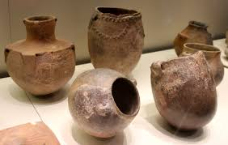
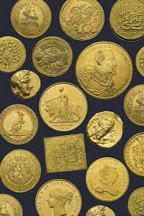
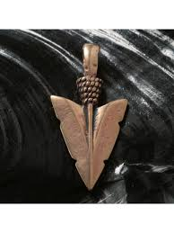
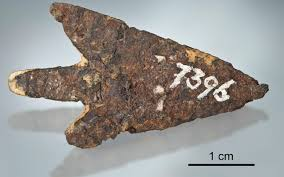

Home
Expozitie
Colecții
Vizite
Contacte
Artefacte Arheologice

Ceramică Neolitică
Fragmente ceramice descoperite în siturile neolitice din zona Cahul, datând din mileniul V î.Hr., ornamentate cu motive geometrice incizate.
Mileniul V î.Hr. · Cultura Cucuteni

Monede Antice
Colecție de monede grecești și romane găsite în bazinul Prutului Inferior, mărturie a intensului comerț antic în regiune.
Sec. IV î.Hr. – III d.Hr. · Descoperiri locale

Pandantiv din Bronz
Bijuterie din epoca bronzului descoperită lângă satul Slobozia Mare, decorată cu spirale și simboluri solare specifice epocii.
Cca. 1200 î.Hr. · Epoca Bronzului

Vârfuri de Săgeți Scitice
Vârfuri trilobate din bronz specifice arcașilor sciți, descoperite în necropola de la Crihana Veche, județul Cahul.
Sec. VI – IV î.Hr. · Cultura Scitică
Înapoi
Colecțiile Muzeului de Istorie Cahul · Str. Independenței 2
Cahul, 3901 · Tel: +373 299 2-34-56 · info@muzeucahul.md